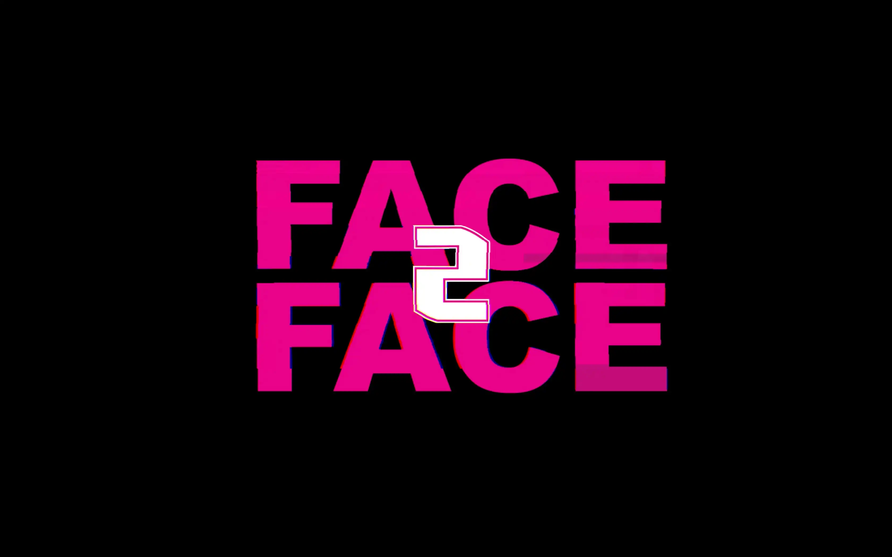
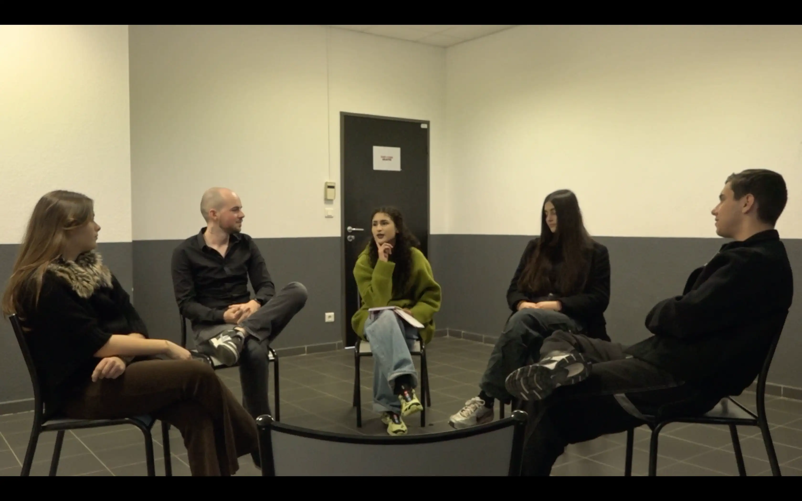

Découvrez mes derniers projets de réalisations et montages.

Ce projet visait à appréhender les bases de la réalisation audiovisuelle en utilisant le smartphone comme unique outil de production. L'exercice a permis de travailler la diversité des plans ainsi que les techniques de captation sonore et visuelle en mode léger.

Ce projet de SAE visait la création d'une publicité pour une association fictive. Le concept : une organisation venant en aide aux vampires désireux de s'affranchir de leur dépendance au sang humain.